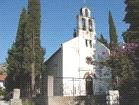
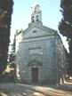
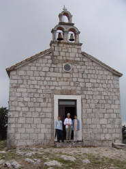
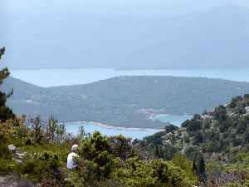
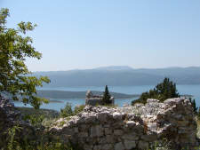

KOMARNA Sightseeing

| |
| |
 Sightseeing
and activities close to Komarna
Sightseeing
and activities close to Komarna
The area close to Komarna is defined here as the area between Neum and Metkovic. There are many attractions and interesting places. This section is dedicated to very close sights and there are four other pages with information about the very close-by area:
-
Churches close to Komarna and around the Neretva Delta.
-
Cities close to Komarna: Metkovic, Opuzen, Neum, Klek.
-
History of the area and suggested historic places to visit.
-
Short excursions that will only take two to three hours.
Very Short Excursions in the Neighborhood
If your children are impatient and if the temperature does not encourage you to stay in the car for too long, there are a number of close-by places that you should still consider to pay a visit. The trips can be done in one to two hours.
Towards Opuzen
Blace

It was once a small fishing and farming village. This was the last place in Europe from which a recorded slave trade was performed until it was forbidden by the Dubrovnik Senate in 1444. The slaves were mainly Bosnian people of the bogomil faith. Today it has become a tourist settlement. It is an interesting small trip to do from Komarna. A word of warning: don't try to go through Duba - that is a bad road and not even four wheel drive will help you.Go towards Opuzen and turn left about half way and take a sharp left turn, there is a road sign saying "Blace". Follow the road that goes up and back in the direction you came from. You drive past several small settlements and end up in Blace where you can turn left into the village. There is a nice natural harbor and a couple of pebble beaches that will be very crowded during the high season.
Going back you should try another way. Turn left leaving town. After a pumping station, you can turn right in the T-junction on an absolutely flat road through the delta that ends up at the main road by Opuzen.
You may also turn left at the junction and then after 500 m you reach Camp Rio camping, restaurant and shopping. On your left is the closest you will get to a sandy beach around here. It is coarse brown gravel that some like better than the rock - and some don't. Have a look and decide for yourself. Continue for one km and turn right along the left bank of Neretva. This will eventually take you to the coastal road.
Church of Slivno Ravno

In the hills above Komarna, there are interesting places that you can reach in a few minutes.Coming from Komarna go 5.5 km towards Opuzen, look out for a big crucifix and for a road sign on your right pointing to Slivno Ravno. Turn sharply right and continue for 1.5 km.
Turn right at a monument and drive along the churchyard up to the church of Slivno Ravno.
The church in Slivno Ravno is very typical. It is the original main church for Slivno Parish and it was built in 1900. To the left of the entrance, there is a stone on the wall shaped as a cross. On this stone, you can see an inscription with Glagolitic characters. This alphabet was in use in Croatia and Bosnia from about 900 to as late as 1920.
Look for the old church in the churchyard. It is very small and you may mistake it for a tool shack.
Church of Sv. Liberate

To go to the small church of Sv. Liberate, turn the car around and
drive past the house that is now on your left and go left down a very
small road.
After 200m, you pass a house on your left.
After 400m, you reach a T-junction. Park the car here.
Walk right along a stonewall for few meters and turn left into a
narrow foot path.
Walk along the footpath up, up and up.
Eventually, you will be rewarded with a magnificent view of the
Neretva Delta and the sea.
Walk down - and drive back to the church of Slivno Ravno

.Turn left down the road that took you up here.
Now turn right at the monument and continue.
After 300 m there is a road on your right.
After 100 m is an almost T-junction, where you turn left.
After 100 m you pass a large new house on your left.
After 200 m you pass a roadside shrine on your right.
Take notice after 400 m where you pass an old Illyrian burial ground where there are tombstones all over the place and some has still typical decorations that can be from Illyrian or from Bogomil times. The place is not excavated and there are no official information about it.
Smrdan Grad Ruins

After another 300 m you pass a road on your right.
After 500 m you reach Smrdan Grad with the ruins of an old
fortification and a small church overlooking Klek.
Smrdan Grad was a medieval fortification build by the Turks in the
beginning of 1400's to protect the Harbor of Klek. The Venetians took
the fortification from the Turks in 1699.
When the Turks tried to take it back in 1699, they lost most of their
army. After the fight, there were so many dead bodies that the town
got its name (stinking city). The Austrian army last used the fortress
during its occupation of Herzegovina.
There is a great view from here down on Klek.
New road down to the Neum border station and to Metkovic
If you continue straight on from Smerdan Grad (very narrow - take care) you will arrive at a new road. Turn right and you will come down to the coastal road close to Neum border. If you turn left you are able to go all the way to the Napoleon Road. There are some nice views over the delta. When you reach the Napoleon Road (or French Road) turn left and you can get to Metkovic and Opuzen. Don't turn right because here the road stops at a border station that is only open to local traffic.